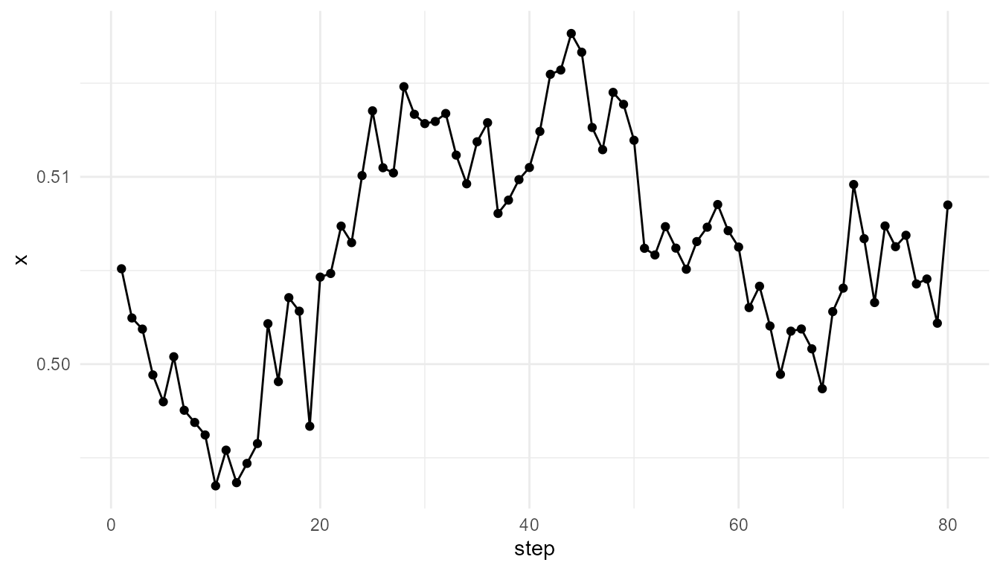
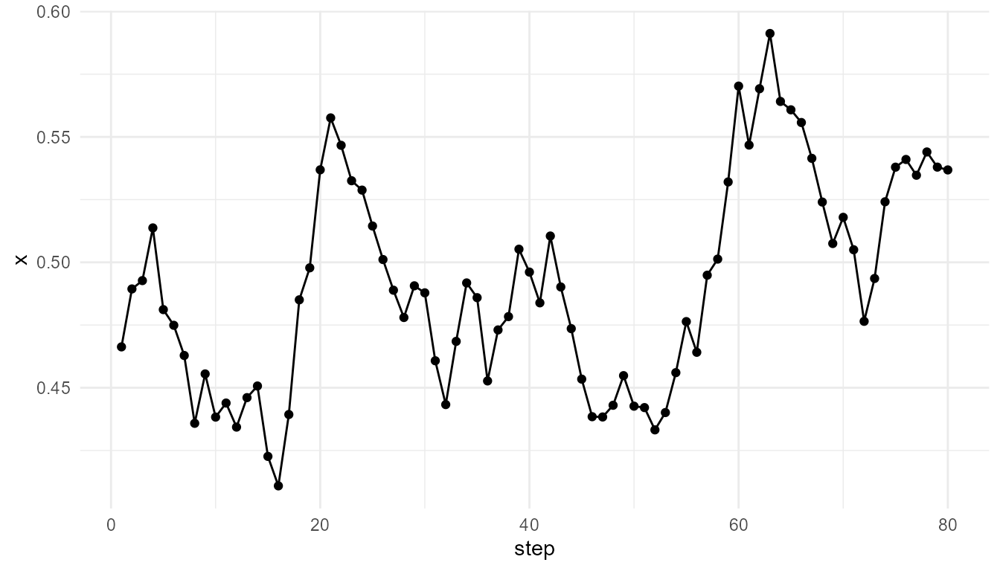

Purpose
This article explains agent-based emergence. Agent-based models show how collective patterns can arise when individual agents follow local rules and interact with one another over time (Epstein and Axtell 1996; Miller and Page 2007).
The purpose of this chapter is to show how
simulate_agent_interactions() represents a basic form of
bottom-up modeling. The function does not attempt to model real
organisms, societies, or neural systems in detail. Instead, it provides
a simplified teaching model for exploring how local movement,
interaction, alignment, and randomness can generate group-level
behavior.
The guiding question is:
How can organized collective behavior arise from many individuals following simple local rules?
What is an agent-based model?
An agent-based model represents a system as a collection of individual units called agents. Each agent has properties, follows rules, and interacts with other agents or with its environment.
The agents may represent many different kinds of units, depending on the research question:
| System | Possible agents |
|---|---|
| Ecology | organisms, species, populations |
| Social systems | people, households, organizations |
| Economics | consumers, firms, markets |
| Biology | cells, molecules, organisms |
| Cognition | neurons, modules, decision units |
| Artificial life | simulated organisms or adaptive entities |
The central idea is that the system-level pattern is not imposed directly. Instead, the pattern arises from the repeated actions and interactions of individual agents.
Bottom-up modeling
Agent-based models are often described as bottom-up. They begin with individuals and local rules, then observe what happens at the system level.
This is different from top-down modeling, where the system is often described using aggregate equations or average behavior. A top-down model might describe a population as a single variable. An agent-based model represents many individual agents and allows population-level behavior to emerge from their interactions.
This bottom-up approach is useful when:
- individuals differ from one another;
- local interactions matter;
- spatial structure matters;
- history and sequence matter;
- randomness affects outcomes;
- collective patterns are difficult to predict from averages alone.
For this reason, agent-based models are widely used in studies of social dynamics, ecology, economics, epidemiology, artificial life, movement, cooperation, and adaptation (Epstein and Axtell 1996; Miller and Page 2007).
Local rules and collective outcomes
Agent-based emergence depends on the relationship between local rules and collective outcomes.
An individual agent may follow a simple rule:
- move randomly;
- align slightly with nearby agents;
- avoid crowding;
- follow a resource gradient;
- copy a neighbor;
- cooperate or defect;
- reproduce or die.
When many agents follow such rules repeatedly, group-level structure may appear. The collective pattern may include clustering, flocking, dispersal, waves, segregation, cooperation, or coordinated movement.
The important point is that no agent needs to understand the whole system. Collective behavior can arise even when each agent responds only to local information.
Local interaction
In simulate_agent_interactions(), agents move in a
two-dimensional space. They are influenced by nearby agents and by
random movement. The model is deliberately simple, but it demonstrates
how local interaction can affect group-level behavior.
The core parameters include:
| Parameter | Conceptual meaning |
|---|---|
n_agents |
Number of agents in the system |
steps |
Number of time steps |
interaction_radius |
Distance within which agents influence one another |
alignment |
Strength of movement alignment with nearby agents |
seed |
Random seed for reproducibility |
The function therefore represents a simplified interaction system: agents move, respond to nearby agents, and collectively generate trajectories over time.
Basic simulation
agents <- simulate_agent_interactions(
n_agents = 50,
steps = 80,
interaction_radius = 0.15,
alignment = 0.05,
seed = 8
)
head(agents)
#> step agent x y
#> 1 1 A1 0.4662952 0.13410932
#> 2 1 A2 0.2078233 0.06713086
#> 3 1 A3 0.7996580 0.14446098
#> 4 1 A4 0.6518713 0.34520790
#> 5 1 A5 0.3215092 0.97448107
#> 6 1 A6 0.7189275 0.28083113Tracking the group center
One simple way to summarize collective movement is to calculate the average position of the group at each time step.
center <- aggregate(
cbind(x, y) ~ step,
data = agents,
FUN = mean
)
head(center)
#> step x y
#> 1 1 0.5050932 0.4902347
#> 2 2 0.5024663 0.4885721
#> 3 3 0.5018733 0.4904309
#> 4 4 0.4994247 0.4875765
#> 5 5 0.4979910 0.4850244
#> 6 6 0.5003963 0.4809147
plot_emergence_sim(
center,
x = "step",
y = "x",
type = "line"
)
Interpretation
The group center changes over time because agents are moving and interacting. No single agent controls the group. The group-level trajectory is a summary of many individual movements.
This illustrates the core logic of agent-based emergence:
Collective behavior arises from repeated local actions, not from a central controller.
The model is simple, but it helps learners understand why collective dynamics cannot always be inferred from the behavior of a single agent alone.
Interaction radius
The interaction_radius parameter controls how far agents
can “notice” or be influenced by nearby agents. A small radius means
that agents respond only to very close neighbors. A larger radius means
that more agents can influence one another.
small_radius <- simulate_agent_interactions(
n_agents = 50,
steps = 80,
interaction_radius = 0.05,
alignment = 0.05,
seed = 8
)
large_radius <- simulate_agent_interactions(
n_agents = 50,
steps = 80,
interaction_radius = 0.30,
alignment = 0.05,
seed = 8
)
small_center <- aggregate(cbind(x, y) ~ step, data = small_radius, FUN = mean)
large_center <- aggregate(cbind(x, y) ~ step, data = large_radius, FUN = mean)
head(small_center)
#> step x y
#> 1 1 0.5050932 0.4902347
#> 2 2 0.5024473 0.4885756
#> 3 3 0.5018415 0.4901996
#> 4 4 0.4992804 0.4871061
#> 5 5 0.4979719 0.4844932
#> 6 6 0.5004923 0.4803796
head(large_center)
#> step x y
#> 1 1 0.5050932 0.4902347
#> 2 2 0.5023614 0.4885420
#> 3 3 0.5018155 0.4905072
#> 4 4 0.4994076 0.4872856
#> 5 5 0.4977665 0.4848004
#> 6 6 0.4998124 0.4806412Interpretation of interaction radius
Interaction radius matters because it defines the local neighborhood of each agent. If the radius is small, the system may behave as many weakly connected local groups. If the radius is large, agents are more likely to influence one another across broader distances.
This is an important principle in emergence:
The scale of interaction shapes the scale of collective behavior.
In real systems, interaction distance can correspond to physical distance, communication range, social connection, chemical signaling, or perceptual range.
Alignment
The alignment parameter controls how strongly agents
adjust their movement in response to nearby agents. Alignment is
important in many collective systems, especially flocking, schooling,
crowd movement, and coordination.
weak_alignment <- simulate_agent_interactions(
n_agents = 50,
steps = 80,
interaction_radius = 0.15,
alignment = 0.01,
seed = 8
)
strong_alignment <- simulate_agent_interactions(
n_agents = 50,
steps = 80,
interaction_radius = 0.15,
alignment = 0.15,
seed = 8
)
weak_center <- aggregate(cbind(x, y) ~ step, data = weak_alignment, FUN = mean)
strong_center <- aggregate(cbind(x, y) ~ step, data = strong_alignment, FUN = mean)
head(weak_center)
#> step x y
#> 1 1 0.5050932 0.4902347
#> 2 2 0.5024511 0.4885749
#> 3 3 0.5018317 0.4902347
#> 4 4 0.4992718 0.4872055
#> 5 5 0.4979703 0.4846036
#> 6 6 0.5004689 0.4804981
head(strong_center)
#> step x y
#> 1 1 0.5050932 0.4902347
#> 2 2 0.5025044 0.4885651
#> 3 3 0.5018100 0.4907644
#> 4 4 0.4995416 0.4878295
#> 5 5 0.4978822 0.4855707
#> 6 6 0.4998590 0.4812056Interpretation of alignment
Weak alignment means that agents remain more independent. Strong alignment means that local neighbors exert greater influence on one another’s movement.
Alignment can produce coordination, but too much alignment may also reduce diversity of behavior. This tension is common in emergent systems. Collective order often depends on a balance between individual variation and social or local influence.
Individual behavior versus collective pattern
A key advantage of agent-based modeling is that it allows both individual and collective levels to be examined.
At the individual level, each agent has a position and movement history. At the collective level, the group may show clustering, dispersion, or coordinated movement.
one_agent <- subset(agents, agent == unique(agents$agent)[1])
head(one_agent)
#> step agent x y
#> 1 1 A1 0.4662952 0.1341093
#> 51 2 A1 0.4893902 0.1327761
#> 101 3 A1 0.4927187 0.1278746
#> 151 4 A1 0.5137206 0.1246703
#> 201 5 A1 0.4811531 0.1090003
#> 251 6 A1 0.4749002 0.1414944
plot_emergence_sim(
one_agent,
x = "step",
y = "x",
type = "line"
)
A single agent’s trajectory may appear noisy or limited. The collective pattern becomes clearer only when many agents are considered together.
This is a defining feature of emergence: the system-level description is not simply a copy of the individual-level description.
Measuring collective behavior
The function measure_emergence() can be used to
summarize simulation outputs. Metrics do not fully define emergence, but
they can help compare model runs.
center <- aggregate(
cbind(x, y) ~ step,
data = agents,
FUN = mean
)
measure_emergence(
center,
value_col = "x",
time_col = "step"
)
#> n unique_states shannon_entropy mean_value sd_value temporal_variability
#> 1 80 80 6.321928 0.5059994 0.005936455 0.005936455
#> mean_absolute_change
#> 1 0.002154234Such summaries are useful for comparing parameter settings. For example, one can compare whether high alignment produces less variability than low alignment, or whether larger interaction radii produce more coordinated movement.
Agent-based emergence and self-organization
Agent-based emergence is closely related to self-organization. In both cases, system-level order arises without central control.
However, agent-based models emphasize individual entities. Each agent can have its own state, behavior, and interaction rules. This makes agent-based modeling especially useful for systems where heterogeneity matters.
Self-organization asks how order forms through internal dynamics. Agent-based modeling asks how individual actions and interactions produce collective outcomes.
Connection to life
Agent-based emergence is relevant to origin-of-life and biological themes because living systems involve many interacting units across levels.
Examples include:
- molecules forming reaction networks;
- protocells interacting with environments;
- cells coordinating in tissues;
- organisms interacting in ecosystems;
- populations evolving through variation and selection.
In each case, system-level organization arises from interactions among lower-level units. This does not mean that agent-based models fully explain life, but they provide a useful way to represent local interaction, adaptation, and collective dynamics.
Connection to cognition and consciousness
Agent-based emergence is also relevant to cognition and consciousness. Brains are not controlled by a single central unit in a simple sense. Cognitive patterns arise from interactions among many neurons, neural populations, bodily systems, and environmental feedback.
Similarly, social cognition and collective intelligence can involve many interacting agents producing group-level behavior that no single individual fully controls.
This does not mean that agent-based models explain consciousness. Rather, they provide a modeling language for thinking about how distributed interactions can give rise to organized behavior.
Relation to other package functions
| Function | Relationship to agent-based emergence |
|---|---|
simulate_agent_interactions() |
Models local interaction among moving agents |
simulate_self_organization() |
Models distributed pattern formation on a grid |
simulate_network_growth() |
Models relational structure among connected units |
measure_emergence() |
Summarizes diversity, entropy, or temporal change |
plot_emergence_sim() |
Visualizes individual or collective dynamics |
Together, these functions help learners compare different pathways to emergence: spatial patterns, agent interactions, and network structure.
What the model captures
The model captures several important ideas:
- individual agents follow local rules;
- agents respond to nearby agents;
- collective behavior can arise without central control;
- interaction radius affects coordination;
- alignment affects group movement;
- randomness and local influence interact over time.
These features make the model useful for teaching the bottom-up logic of agent-based emergence.
What the model does not capture
The model is intentionally simplified. It does not include:
- real perception;
- memory;
- learning;
- reproduction;
- energy use;
- decision-making;
- communication in detail;
- environmental resources;
- evolutionary adaptation;
- complex social behavior.
It is a teaching model, not a complete behavioral, ecological, biological, or cognitive model.
Responsible interpretation
It is better to say:
The simulation illustrates how collective movement can arise from local agent interactions.
than:
The simulation explains real animal behavior or social coordination.
It is better to say:
The model shows how interaction radius and alignment affect group-level patterns.
than:
The model fully represents cognition, life, or society.
Careful interpretation is especially important because agent-based models can appear realistic even when their rules are highly simplified.
Educational use
This chapter can support several classroom or self-study questions:
- How does local interaction produce group-level behavior?
- What happens when agents have a larger interaction radius?
- What happens when alignment is stronger?
- Does collective order require central control?
- How does randomness affect group behavior?
- What is lost when real agents are simplified?
- How could the model be extended to include memory, learning, or resources?
These questions help learners understand agent-based models as tools for conceptual exploration rather than complete representations of real systems.
Key takeaway
Agent-based emergence occurs when collective patterns arise from the repeated actions and interactions of individual agents.
simulate_agent_interactions() provides a simplified
educational model of this process. It helps learners explore how local
interaction, movement, alignment, and randomness can generate
group-level dynamics without central control.